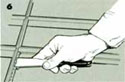

6) With clean hands, thoroughly knead some glazing compound into a workable consistency, then apply a 1/16""-thin layer along the groove with a putty knife. This is to give the glass a cushion against stress and irregularities in the frame.